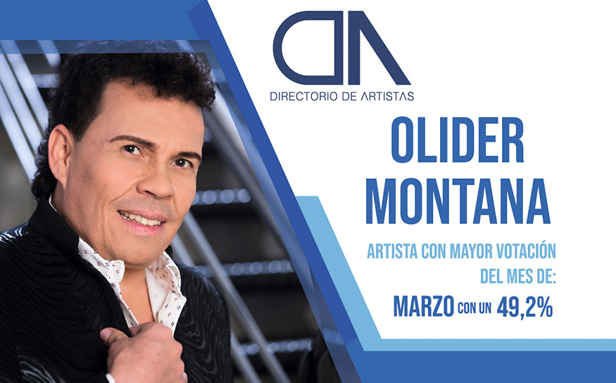
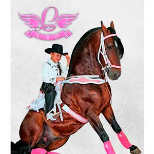

Directorio de Artistas

Air Boy
{kind=link}
Alex Santamaría
 |
Alex Santamaría, cantautor colombiano, nacido en la Villa de San Diego de Ubaté, se lanzó como solista, incursionado en el género norteño romántico y presenta su tercer trabajo discográfico –Olvido intencional-,canción con la que Alex Santamaría, se estrena en el género popular con su estilo ranchero, dándole un sello personal Contacto:Teléfono: 310 3212968 Instagram: @AlexSantamaria Facebook: Alex Santamaría Twitter: @AlexSantamaria YouTube: Alex Santamaría
|
La Megabanda
{kind=link}
Eddy Soler
 |
El artista boyacense, Eddy Soler, presenta su más reciente sencillo titulado “Escapémono”, una canción dedicada para todas aquellas personas que se quieren, y se desean pegar una escapadita de la rutina diaria, bien sean esposos, novios o amantes. |
El Cóndor del Oriente
 |
Robinson Ospina, “El Cóndor del Oriente”,
con mucho sentimiento y con una historia
común del día a día, presenta su nuevo video "Un día sin tu amor", con el que seguirá conquistando
el mundo de la música popular. |
Yiyo Bohórquez
 |
Oriundo de Santa Sofía – Boyacá. Cantante, compositor e intérprete del acordeón; desde muy niño su inclinación por el vallenato ha llegado a miles de seguidores con canciones como “Entrégame tu amor”, ahora presenta su nuevo éxito “El amor de mi vida”. |
Génesis Internacional
{kind=link}
J. Montana
 |
J. Montana, artista bogotano nos presenta
su más reciente éxito, -No me vuelvo a
enamorar-, con un ritmo novedoso y una letra
refrescante para los amantes de la música
urbana. |
Jessi Uribe
 |
Jessi Uribe, el artista revelación de la música popular en Colombia presenta sus éxitos "Repítela", "Matemos las ganas" y "De dulce pecado". El video es de la autoría de Hugo Fernando Marín, grabado y masterizado en los estudios Salvaje Producciones en la ciudad de Bucaramanga, bajo la dirección de Edwin Jaimes.Contacto: Teléfono: 318 5532908 Instagram: @JessiUribe3 Facebook: JessiUribe www.jessiuribe.com |
Jhoan Ospina
{kind=link}
Juan Carlos Ensamble
 |
Juan Carlos Ensamble, el artista chocoano puso a bailar a toda Colombia con su nuevo sencillo “Encantadora”, tema que hace parte de su nueva producción discográfica de este artista que sigue consolidando su carrera como solista. |
JuanK Índigo
 |
JuanK Índigo, es un artista bogotano con más de 15 años en el ámbito musical, en 2017 lanza la producción -Quieras o no quieras-, la cual ya incursiona además de productos como compositor, al lado de Sheeno “El Sensei” quien incorpora sonidos más urbanos para ponerse a tono con lo que está pasando en la música a nivel mundial. Contacto: |
Julián del Castillo
{kind=link}
Julián López
 |
Julián López, tras consolidarse con su éxito de 2017 "Borracho", inicia el 2018 con estreno; -Me quedó con las dos-, un clásico de nunca olvidar. Contacto: |
KandyMaku
 |
El cantante arahuaco, KandyMaku, presenta hoy las canciones "Zamaya" y "Enamorado de ti", como anticipos musicales de su álbum titulado “Guardián”, que lanzará en el preámbulo del Festival Vallenato 2018. |
Karval
 |
Alegría y mucho color son las partes fundamentales de la nueva canción de Karval, "Vivo sabroso", donde el artista hace un llamado a todo el que lo escuche a que viva sabroso. El video fue grabado en su natal Medellín y contó con más de 30 personas en producción. |
La Energía Norteña
{kind=link}
La Maquinaria Norteña
 |
Líderes en el mundo del regional mexicano, pioneros y precursores del género norteñocon Sax, La Maquinaria Norteña vuelve al estudio de grabación y nos presentan el primero de los 16 temas que contendrá este disco.-Así ya no- Contacto: |
Las Ingratas
 |
Se han consolidado como el mejor grupo de Tecnocarrilera femenino gracias a su exitosa carrera musical. Las Ingratas, de la mano del reconocido director y productor musical, Albeiro Sáenz, lanzan su tema inédito -Llorarás por mí- de la autoría de Lalo Bravo, proyectándose cómo éxito popular. |
Loren, “La voz angelical”
|  | Loren, “La voz angelical”, una niña de tan solo 10 años, nos presenta un show único con su caballo de alta escuela acompañada de su grupo norteño para cualquier tipo de evento. Contacto: |
{kind=link}
Los Bacanes del Sur
{kind=link}
Los De Yolombó
 |
Los De Yolombó, se caracterizan por llevar alegría y diversión en cada una de sus presentaciones, la música tropical, parrandera y parodia, hacen parte de su repertorio musical que pueden disfrutar los asistentes de sus diferentes shows, también son llamados “Los reyes de la parodia”. |
Los Hermanos Medina
 |
Desde Popayán – Cauca, llega la agrupación tropical número 1 de la región pacífica, Los Hermanos Medina, que está conformada por el padre y sus hijos, y presentan su más reciente éxito “Estado civil: Amantes”, después de sus éxitos “Somos prohibidos” y “Quédate con él”, que superó los 6 millones de views en YouTube. |
Marcos “El bohemio”
{kind=link}
Mau G
{kind=link}
Mauricio Ceballos
 |
Mauricio Ceballos, “Puro sentimiento”, inicia este 2018 pisando fuerte con su cuarto sencillo "Estoy mamao", una canción de su autoría y acompañada de su interpretación que les llega a todos. Contacto: |
Olider Montana
{kind=link}
Orlando López
 |
-Sufre corazón-, es el nuevo sencillo de
Orlando López, con el que logró salirse de lo común y mostró en su video una historia diferente. "Sufre corazón", se está consolidando como un éxito nacional y está punteando los rankings de los medios de comunicación como uno de los mejores del 2018. |
Óscar Javier Rosero
 |
Óscar Javier Rosero, el cantautor ha logrado posicionar muchas de sus canciones a nivel nacional entre ellas su más reciente éxito –El pretexto-, una canción arrolladora con la cual conquista a todo el público colombiano. |
RisaLoca
 |
Óscar Monsalve ‘RisaLoca’, reconocido humorista e imitador con más de 15 años de carrera artística, actualmente hace parte del elenco de Sábados Felices del Canal Caracol y La Luciérnaga de Caracol Radio. Sumado a su faceta, crea su grupo cómico-musica, Risa-Loca y los Desagradecidos, el cual le apuesta, de la mano del humor a la música parrandera tradicional. |
Sara Jaramillo
{kind=link}
Panche de oro
 |
“El panche de oro“, cantante y compositor, nacido en Chaparral, Tolima ha grabado 4 CD, “Soldado bohemio”, “El fruto de mis esfuerzos”, “El mujeriego” y “Alterado” y “contagioso”. Ahora nos presenta su nueva producción discográfica “Hechicero”, una gran combinación, corridos alterados y un estilo muy contagioso en el género popular. |
Stokoff
 |
Después de lograr los primeros lugares en los listados radiales en Colombia y la Costa Este de los Estado s Unidos, el artista regresa para promocionar su más reciente sencillo y video musical titulado "Pensando en ti", tema de su completa autoría, en donde habla de una historia de amor que se termina y uno de los protagonistas no logra olvidar a la otra persona por más que lo intenta. Contacto: |
Ulises Santacruz
 |
Ulises Santacruz, cantautor nariñense de música popular, con cinco años de trayectoria musical, presenta sus más recientes sencillos "Aventurero" y "Mientras llego", éxitos que han llegado a Ecuador y Perú. Contacto: |
Wilmer Ariza
{kind=link}
Wilmer Saldarriaga
{kind=link}
Amanda Patricia
 |
Amanda Patricia, “La voz de la música popular” estrena su más reciente sencillo –La que se va soy yo-, que tiene gran proyección para ser uno de los éxitos del 2018. El video fue grabado en la ciudad de Medellín. |
Yossimar
{kind=link}
Fernando Gil
 |
El caballero de la música popular. Tras los éxitos como "A mi manera", "Incondicional" y "Perdí", Fernando Gil decidió relanzar el sencillo "Como dices tú", un tema que se ha mantenido en los primeros lugares en Colombia y México desde su lanzamiento en 2015 y que produjo de la mano de Kike Santander. Contacto: |
Miguel Vaquero
 |
El artista paisa de música popular Miguel Vaquero, estrena su más reciente sencillo "Sé que fallé", una producción de Felinos Producciones, sumando un nuevo éxito a su recorrido. “Sé que fallé”, demuestra nuevamente los aires innovadores que Miguel Vaquero le está aportando al género popular desde su disco “Un solo sentimiento”. |
Juan Palau
{kind=link}
Los Inquietos
 |
Los Inquietos del Vallenato presentan el video de su más reciente sencillo "Dónde está el amor", tema de la autoría del reconocido acordionista y compositor Alvin Anaya “El mafia”, canción que ha obtenido excelente aceptación gracias a su historia real y cotidiana, donde se reclama a la pareja infiel advirtiéndole que no se le ocurra volver, con la cual muchos se han identificado. Contacto: |
{kind=link}
{kind=link}